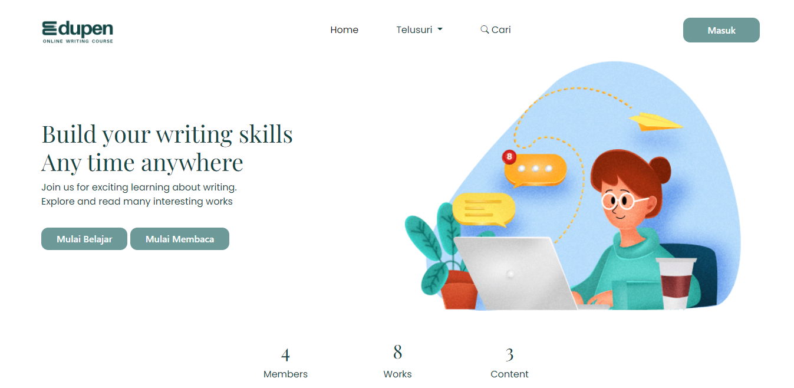
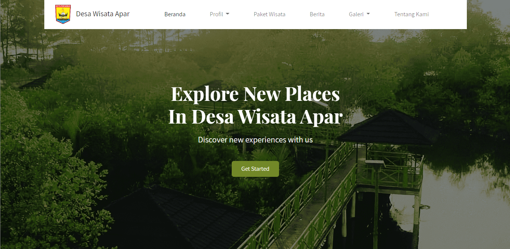
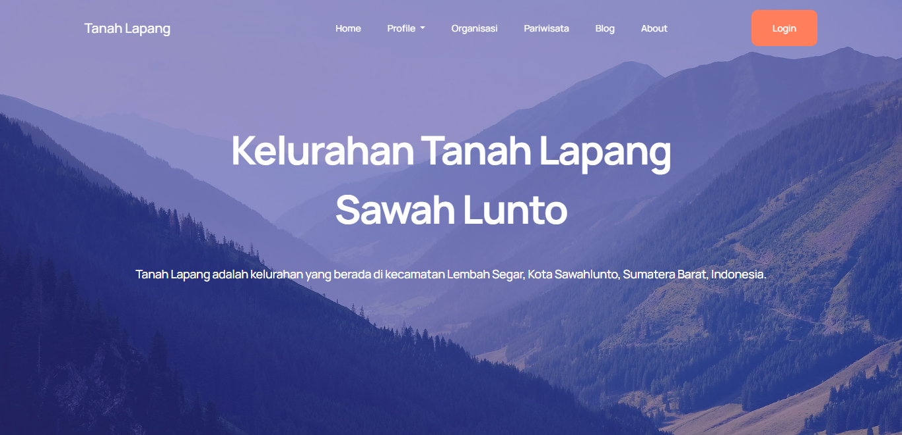
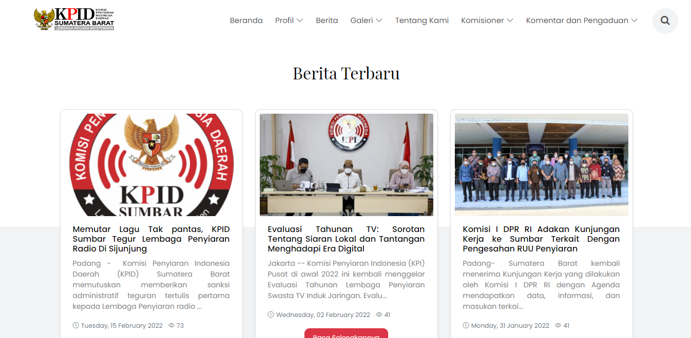
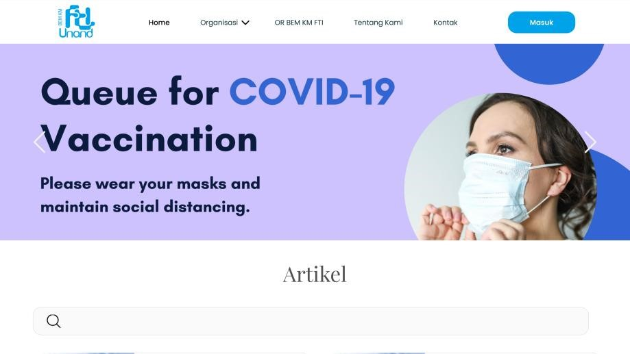
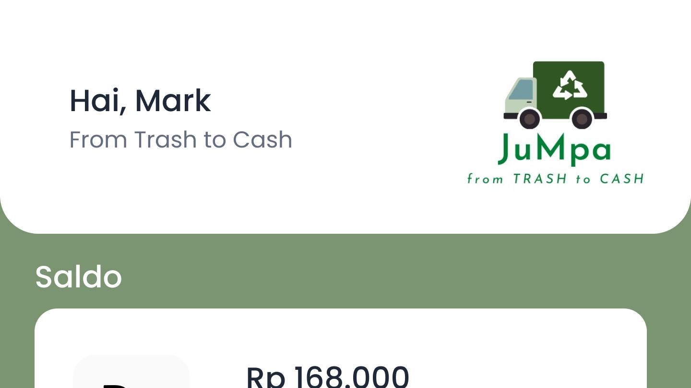

Hi. I'm Nadya Gusdita.
A Information Systems Student.
Welcome to my portfolio. I invite you to explore my site to get a
better understanding of my specialities.
Hallo. Saya Nadya Gusdita merupakan seorang mahasiswa S-1 yang
saat ini menempuh perkuliahan di Universitas Andalas dengan Program
Studi Sistem Informasi Angkatan 2019 yang saat ini berada di tahun ke-4
perkuliahan. Saya memiliki passion di bidang pemrograman, terutama
web development.
Saya memiliki pengalaman magang sebagai
web programmer di Dinas Komunikasi, Statistik, dan Informatika
Provinsi Sumatera Barat dan pernah menempuh pembelajaran di Program
Studi Independen Bersertifikat Ruangguru X Kampus Merdeka dengan
learning path Backend Engineering.
Education
Universitas Andalas
2019 - Sekarang
SMAN 1 Pariaman
2016 - 2019
SMPN 1 Pariaman
2013 - 2016
Portfolio
Take a look at some of my portfolio below

EDUPEN: Online Writing Course
Dikembangkan sebagai bagian dari kompetisi Hackathon Lustrum II
FTI UNAND, EDUPEN merupakan website kursus menulis online yang
memberikan kemudahan dalam meningkatkan kemampuan menulis secara
online. Website ini dibuat menggunakan bahasa pemrograman PHP dan
Bootstrap 5.

Desa Wisata Apar Official Website
Sebagai bagian dari program Kuliah Kerja Nyata, saya mengembangkan
situs web untuk Desa Wisata Apar Pariaman. Website ini menampilkan
warisan budaya dan keindahan alam desa untuk menarik pengunjung
dan mempromosikan pariwisata berkelanjutan. Website ini dibuat
menggunakan bahasa pemrograman PHP dan Bootstrap 5.

Kelurahan Tanah Lapang Official Website
Website ini merupakan proyek tim yang dikembangkan oleh LDKOM
(Laboratorium Komputasi Dasar) sebagai proyek pengabdian
masyarakat. Situs web ini berfungsi sebagai platform online yang
menyediakan informasi dan sumber daya berharga bagi warga
Kelurahan Tanah Lapang. Website ini dibuat menggunakan bahasa
pemrograman PHP dan Bootstrap 5

KPID Sumatera Barat Official Website
Melakukan desain ulang user interface website KPID Sumbar dengan
desain yang menarik dan mengembangkan fitur baru yaitu polling
kepuasan masyarakat terhadap kinerja KPID Sumbar. Website ini
dibuat dengan menggunakan CodeIgniter 3 dan Bootstrap 5.

BEM KM FTI Official Website
Website BEM KM FTI merupakan proyek kelompok yang dibuat sebagai
bagian dari mata kuliah Change Management dan IT Project. Website
ini menyajikan informasi terkini tentang kegiatan, acara, dan
proyek yang dilakukan oleh BEM KM FTI. Website ini dibuat dengan
menggunakan PHP dan Bootstrap 5.

JuMpa: Jual Sampah
Jual Sampah adalah aplikasi android yang dikembangkan sebagai
proyek akhir tim untuk mata kuliah Pemrograman Mobile. Aplikasi
ini memungkinkan pengguna untuk dengan mudah menjual berbagai
jenis sampah. Pengguna dapat dengan cepat menemukan pembeli
terdekat dan mengatur transaksi. Aplikasi ini dibuat menggunakan
Android Studio dan Java.